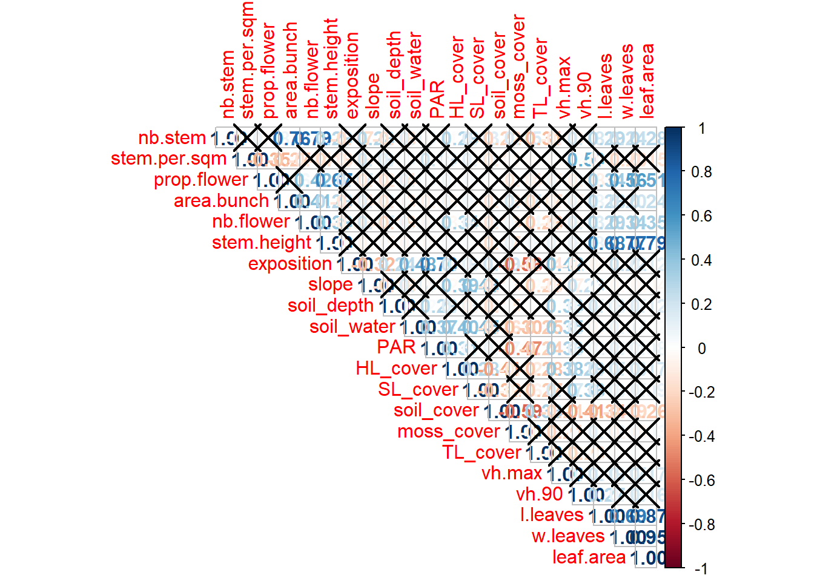
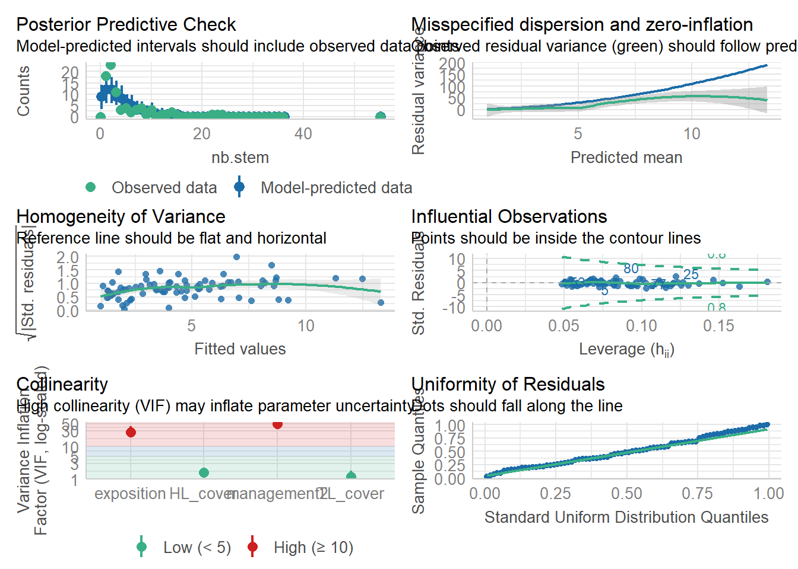
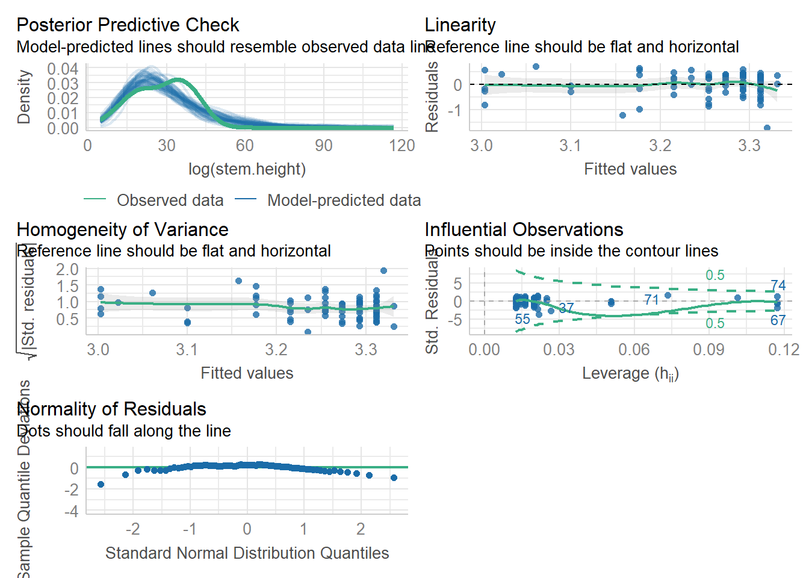
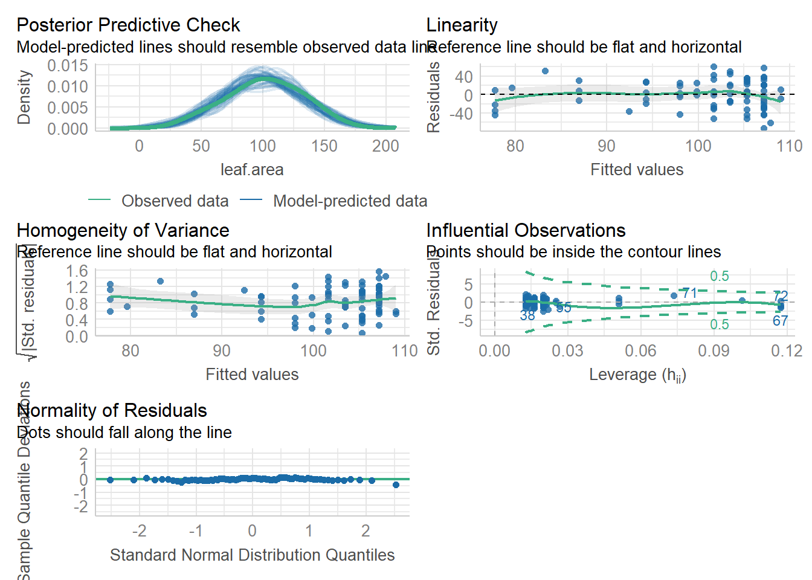
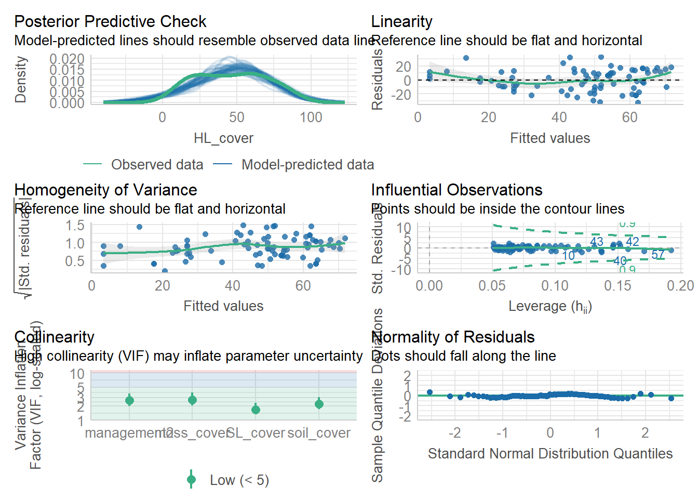

library(openxlsx)
library(MASS)
library(plotrix)
library(agricolae)
library(patchwork)
library(tidyverse)
library(magrittr)
library(performance)E11 Cypripedium - Analyse signifikanter Umweltparameter
1. Vorbereitende Schritte
Genutze R-Packages
Selbsterstellte Funktionen
Nutzung mit freundlicher Genehmigung von Markus Bernhardt-Römermann.
invlogit <- function(x) return(round(exp(x) / (1 + exp(x)), 3))
rename.letters <- function(x) {
x$groups <- as.character(x$groups)
if (grepl("a", x$groups[1])) {
new.letters <- x$groups
} else {
which.letters <- unique(strsplit(paste(x$groups, collapse = ""), "")[[1]])
which.letters <- which.letters[order(which.letters)]
tab.translate <- data.frame(orig = unique(strsplit(paste(x$groups, collapse = ""), "")[[1]]), new = NA)
tab.translate$orig <- as.character(tab.translate$orig)
tab.translate$new[1] <- "a"
which.letters <- which.letters[-(which.letters %in% tab.translate$new[1])]
for (j in 2:dim(tab.translate)[1]) { # j=3
if (!(tab.translate[j, "orig"] %in% which.letters)) {
tab.translate[j, "new"] <- which.letters[order(which.letters)][1]
} else {
tab.translate[j, "new"] <- tab.translate[j, "orig"]
}
which.letters <- which.letters[-(which.letters %in% tab.translate$new[j])]
}
new.letters <- rep(NA, dim(x)[1])
for (k in 1:dim(x)[1]) { # k = 1
new.letters[which(x$groups %in% tab.translate$orig[k])] <- tab.translate$new[k]
}
if (any(is.na(new.letters))) {
for (l in which(is.na(new.letters))) { # l=3
multi.letter <- unique(strsplit(paste(x$groups[l], collapse = ""), "")[[1]])
for (m in 1:length(multi.letter)) { # m = 1
multi.letter[m] <- tab.translate$new[which(tab.translate$orig %in% multi.letter[m])]
}
multi.letter <- multi.letter[order(multi.letter)]
new.letters[l] <- paste0(multi.letter, collapse = "")
}
}
}
x$groups <- new.letters
return(x)
}
write_model_table <- function(model.result = NULL, file.name = NULL) {
if (file.name %in% list.files()) {
wb.model.tables <- loadWorkbook(xlsxFile = file.name)
} else {
wb.model.tables <- createWorkbook()
}
dep_var <- names(attributes(summary(model.result)$term)$dataClasses[1])
if (grepl(pattern = "(", dep_var, fixed = TRUE)) {
start.p <- regexpr(pattern = "(", text = dep_var, fixed = TRUE)[1] + 1
if (grepl(pattern = ",", dep_var, fixed = TRUE)) {
end.p <- regexpr(pattern = ",", text = dep_var, fixed = TRUE)[1] - 1
} else {
end.p <- regexpr(pattern = ")", text = dep_var, fixed = TRUE)[1] - 1
}
dep_var <- str_sub(dep_var, start = start.p, end = end.p)
}
coef_table <- as.data.frame(summary(model.result)$coefficients)
coef_table[, 1] <- round(coef_table[, 1], 3)
coef_table[, 2] <- round(coef_table[, 2], 3)
coef_table[, 3] <- round(coef_table[, 3], 3)
coef_table[, 4] <- round(coef_table[, 4], 4)
style_border <- createStyle(border = "TopBottomLeftRight ", borderStyle = "thin", borderColour = "black")
style_header <- createStyle(border = "TopBottomLeftRight", fgFill = "lightgrey")
if (length(names(wb.model.tables) != 0)) {
if (dep_var %in% names(wb.model.tables))
removeWorksheet(wb.model.tables, sheet = dep_var)
}
addWorksheet(wb.model.tables, sheetName = dep_var)
writeData(wb.model.tables, sheet = dep_var, headerStyle = style_header, rowNames = TRUE, x = coef_table)
addStyle(wb.model.tables, sheet = dep_var, style = style_border, rows = 1:(dim(coef_table)[1] + 1), cols = 1:(dim(coef_table)[2] + 1), stack = TRUE, gridExpand = TRUE)
# save table with model results
saveWorkbook(wb.model.tables, file = file.name, overwrite = TRUE)
}Einlesen der Daten von 2019 und 2024
# 2024
ind_data_2024 <- read.xlsx("datalike2019.xlsx", sheet = 1)
str(ind_data_2024)'data.frame': 80 obs. of 26 variables:
$ Labnumber : num 1 2 3 4 5 6 7 8 9 10 ...
$ YourID : chr "WI1" "WI2" "WI3" "WI4" ...
$ Zone.UTM : chr "32U" "32U" "32U" "32U" ...
$ East : num 11.5 11.5 11.5 11.5 11.5 ...
$ North : num 50.9 50.9 50.9 50.9 50.9 ...
$ nb.stem : num 8 8 5 4 23 15 2 8 13 3 ...
$ stem.per.sqm: num 55.1 63.8 31.7 74.1 115 ...
$ area.bunch : num 1452 1254 1575 540 2000 ...
$ nb.flower : num 3 6 4 3 21 11 1 3 9 0 ...
$ prop.flower : num 37.5 75 80 75 91.3 ...
$ stem.height : num 37 34.8 31.9 32.2 34.2 ...
$ l.leaves : num 13.5 12 13.5 12.2 14.6 ...
$ w.leaves : num 10.75 8.25 8.55 7.9 9.25 ...
$ management2 : chr "Wald" "Wald" "Wald" "Wald" ...
$ exposition : num 176 152 133 162 166 184 177 165 178 171 ...
$ slope : num 60 72 59 74 60 57 65 60 68 65 ...
$ soil_depth : num 25 15.7 22.3 15.3 24.3 ...
$ soil_water : num 22.8 25.6 29.4 25.8 31.1 ...
$ PAR : num 21.4 26.8 15.8 21.6 20.1 ...
$ HL_cover : num 40 60 85 63 80 45 80 75 75 20 ...
$ SL_cover : num 20 70 40 60 30 40 3 40 40 90 ...
$ TL_cover : num 20 15 40 40 10 0 0 20 20 20 ...
$ soil_cover : num 5 40 5 30 20 5 10 10 5 20 ...
$ moss_cover : num 90 40 40 30 40 70 80 80 60 40 ...
$ vh.max : num 43 45 77 27 40 50 52 48 46 40 ...
$ vh.90 : num 15 16 21 12 20 20 10 25 21 15 ...# 2019
ind_data_2019 <- read.xlsx("individuals_data.xlsx", sheet = 1)
str(ind_data_2019)'data.frame': 91 obs. of 27 variables:
$ Labnumber : num 60 57 59 56 53 58 55 54 51 52 ...
$ YourID : chr "01F" "02F" "03F" "04F" ...
$ Zone.UTM : chr "32U" "32U" "32U" "32U" ...
$ East : num 677065 677072 677067 677066 677069 ...
$ North : num 5643900 5643904 5643900 5643903 5643909 ...
$ nb.stem : num 19 11 11 14 8 22 3 26 2 6 ...
$ stem.per.sqm: num 43.2 149.7 201.5 40.7 124.2 ...
$ area.bunch : num 4399 735 546 3440 644 ...
$ nb.flower : num 9 11 8 7 8 8 1 0 2 2 ...
$ prop.flower : num 47.4 100 72.7 50 100 ...
$ stem.height : num 46 43.5 43.5 47.5 54 47 47.5 27 55 43.5 ...
$ FvFm : num 0.755 0.77 0.785 0.765 0.745 0.81 0.755 0.78 0.755 0.76 ...
$ PI : num 0.88 0.855 1.69 1.315 0.93 ...
$ SLA : num 35.5 32.2 34.6 28.7 27.9 ...
$ LDMC : num 162 161 163 175 181 ...
$ management : chr "CC" "CC" "CC" "CC" ...
$ management2 : chr "CC" "CC" "CC" "CC" ...
$ exposition : num 169 170 163 167 162 180 175 156 190 173 ...
$ slope : num 35 24 19 28 30 33 25 29 26 25 ...
$ soil_depth : num 14.2 8.2 10.2 13.2 14.3 14.2 14 12.3 11.9 13.3 ...
$ soil_water1 : num 12.6 11.3 18.1 18.8 14.1 20.8 12.8 20.5 11.3 15.1 ...
$ soil_water2 : num 6.83 3.1 7.03 17.2 5.4 ...
$ PAR : num 30 29.2 23.3 30.3 34.4 ...
$ HL_cover : num 70 60 30 80 90 60 30 40 40 50 ...
$ SL_cover : num 0 0 20 0 0 0 0 0 0 0 ...
$ soil_cover : num 0 10 40 10 3 10 0 10 10 5 ...
$ moss_cover : num 30 30 30 10 5 30 70 30 50 40 ...Vorbereitung der Daten
ind_data_2024 <- ind_data_2024 |>
mutate(leaf.area = l.leaves*w.leaves)
ind_data_2024$management2 <- factor(ind_data_2024$management2,
levels = c("Wald", "Hang", "Buche", "Fichte"),
labels = c("nicht entbuscht", "entbuscht", "Buche", "Fichte"))
ind_data_2019$management2 <- factor(ind_data_2019$management2,
levels = c("CC", "5yr", "beech_forest", "spruce_forest"),
labels = c("nicht entbuscht", "entbuscht", "Buche", "Fichte"))
ind_data_2019 <- ind_data_2019 %>%
mutate(soil_water = rowMeans(select(., soil_water1, soil_water2)))
# area.bunch from cm² to m²
ind_data_2024$area.bunch <- ind_data_2024$area.bunch / 10000
ind_data_2019$area.bunch <- ind_data_2019$area.bunch / 100002. Ergebnistabelle(n) und Boxplots
Ergebnistabelle Flächenvergleich
Berechnung der Mittelwerte und Standardfehler.
means <- aggregate(. ~ management2, data = ind_data_2024[, c(6:27)], mean)
se <- aggregate(. ~ management2, data = ind_data_2024[, c(6:27)], std.error)Erstellung der Ergebnistabelle
result.tab <- data.frame(matrix(NA, nrow = 21, ncol = 13))
rownames(result.tab) <- colnames(ind_data_2024[, c(6:13, 15:27)])
colnames(result.tab) <- c("parameter", levels(ind_data_2024$management2), "F.val", "df", "P.val", "Signif", paste0(levels(ind_data_2024$management2), ".letter"))ANOVA und Tukey’s HSD Test
for (i in 1:dim(result.tab)[1]) { # i = 13
temp <- rownames(result.tab)[i]
mean.se <- paste0(format(round(means[, temp], 2), nsmall = 2), "±", format(round(se[, temp], 3), nsmall = 3))
mean.se <- gsub(" ", "", mean.se)
aov1 <- aov(as.formula(paste0(temp, " ~ management2")), data = ind_data_2024)
anova1 <- summary(aov1)
TukeyHSD.letters <- HSD.test(aov1, "management2", group = TRUE)
TukeyHSD.letters <- TukeyHSD.letters$groups
TukeyHSD.letters <- TukeyHSD.letters[order(match(rownames(TukeyHSD.letters), levels(ind_data_2024$management2))),]
TukeyHSD.letters <- rename.letters(TukeyHSD.letters)
TukeyHSD.letters <- as.character(TukeyHSD.letters[, "groups"])
degfr <- paste(anova1[[1]]$Df, collapse = " and ")
fval <- format(round(anova1[[1]]$"F value"[1], 2), nsmall = 2)
pval <- round(anova1[[1]]$"Pr(>F)"[1], digits = 4)
symp <- symnum(pval, corr = FALSE,
cutpoints = c(0, .001,.01,.05, 1),
symbols = c("***","**","*","n.s."))
pval <- format.pval(pval, eps = .001, digits = 2)
res_temp <- c(temp, mean.se, fval, degfr, pval, symp, TukeyHSD.letters)
result.tab[i, ] <- res_temp
}Benennung der Umweltvariablen
result.tab$env.names <- c("Sprossanzahl pro Horst", "Sprossanzahl pro m² Horstgröße", "Horstgröße [m²]", "Anzahl blühender Sprosse", "Anteil blühender Sprosse [%]", "Sprosshöhe [cm]", "Blattlänge [cm]", "Blattbreite [cm]", "Exposition [°]", "Neigung [%]", "Bodentiefe [cm]", "Bodenfeuchte [%]", "Photosynthetisch aktive Strahlung [%]", "Deckung Krautschicht [%]", "Deckung Strauchschicht [%]", "Deckung Baumschicht [%]", "Deckung offener Boden [%]", "Deckung Moosschicht [%]", "Maximale Vegetationshöhe [cm]", "Höhe 90% der Vegetation [cm]","Blattfläche [cm²]")Exportierung der Ergebnistabelle
result.tab parameter nicht entbuscht entbuscht Buche
nb.stem nb.stem 6.30±1.236 7.30±1.548 2.75±0.376
stem.per.sqm stem.per.sqm 61.31±5.130 158.20±34.444 70.20±10.301
area.bunch area.bunch 0.10±0.015 0.18±0.067 0.05±0.010
nb.flower nb.flower 3.85±1.113 2.50±0.826 1.55±0.246
prop.flower prop.flower 53.60±7.671 21.40±6.159 57.50±8.752
stem.height stem.height 28.87±2.043 26.70±2.207 27.70±2.308
l.leaves l.leaves 12.81±0.241 13.19±0.386 12.67±0.395
w.leaves w.leaves 7.77±0.294 7.48±0.351 8.26±0.360
exposition exposition 167.75±2.651 168.13±2.366 309.90±2.215
slope slope 64.60±1.173 53.40±2.102 33.60±1.213
soil_depth soil_depth 18.60±0.945 23.50±1.414 25.52±1.732
soil_water soil_water 29.75±1.227 25.14±1.077 32.95±1.105
PAR PAR 20.66±1.769 31.86±1.905 51.87±4.750
HL_cover HL_cover 60.00±4.767 50.25±3.881 53.50±4.575
SL_cover SL_cover 45.45±6.325 17.25±4.222 27.80±5.297
TL_cover TL_cover 23.80±4.457 38.35±4.862 31.60±6.457
soil_cover soil_cover 13.00±2.819 16.25±3.118 28.40±5.344
moss_cover moss_cover 57.75±5.187 61.75±4.564 24.95±5.388
vh.max vh.max 49.15±2.837 46.90±1.490 66.20±6.756
vh.90 vh.90 18.30±1.603 23.20±2.925 16.70±1.656
leaf.area leaf.area 100.52±5.158 100.90±7.009 105.97±6.617
Fichte F.val df P.val Signif nicht entbuscht.letter
nb.stem 2.15±0.472 6.10 3 and 76 <0.001 *** ab
stem.per.sqm 52.65±7.705 6.95 3 and 76 <0.001 *** a
area.bunch 0.07±0.029 2.25 3 and 76 0.09 n.s. a
nb.flower 1.10±0.340 2.82 3 and 76 0.044 * a
prop.flower 48.85±10.633 3.73 3 and 76 0.015 * a
stem.height 29.26±2.884 0.24 3 and 76 0.87 n.s. a
l.leaves 12.64±0.521 0.41 3 and 76 0.75 n.s. a
w.leaves 7.37±0.425 1.22 3 and 76 0.31 n.s. a
exposition 163.30±3.403 708.12 3 and 76 <0.001 *** a
slope 25.35±2.449 97.38 3 and 76 <0.001 *** a
soil_depth 21.92±1.239 4.59 3 and 76 0.0052 ** a
soil_water 22.57±0.739 19.45 3 and 76 <0.001 *** a
PAR 9.37±0.644 44.17 3 and 76 <0.001 *** a
HL_cover 20.62±2.264 19.09 3 and 76 <0.001 *** a
SL_cover 5.05±1.749 13.18 3 and 76 <0.001 *** a
TL_cover 54.50±5.524 5.89 3 and 76 0.0011 ** a
soil_cover 29.50±6.558 3.15 3 and 76 0.03 * a
moss_cover 67.25±6.723 11.91 3 and 76 <0.001 *** a
vh.max 40.77±2.282 7.76 3 and 76 <0.001 *** a
vh.90 12.90±1.948 4.12 3 and 76 0.0092 ** ab
leaf.area 96.56±8.469 0.31 3 and 76 0.82 n.s. a
entbuscht.letter Buche.letter Fichte.letter
nb.stem a bc c
stem.per.sqm b a a
area.bunch a a a
nb.flower ab ab b
prop.flower b a ab
stem.height a a a
l.leaves a a a
w.leaves a a a
exposition a b a
slope b c d
soil_depth ab b ab
soil_water b a b
PAR b c d
HL_cover a a b
SL_cover bc b c
TL_cover ab a b
soil_cover a a a
moss_cover a b a
vh.max a b a
vh.90 a ab b
leaf.area a a a
env.names
nb.stem Sprossanzahl pro Horst
stem.per.sqm Sprossanzahl pro m² Horstgröße
area.bunch Horstgröße [m²]
nb.flower Anzahl blühender Sprosse
prop.flower Anteil blühender Sprosse [%]
stem.height Sprosshöhe [cm]
l.leaves Blattlänge [cm]
w.leaves Blattbreite [cm]
exposition Exposition [°]
slope Neigung [%]
soil_depth Bodentiefe [cm]
soil_water Bodenfeuchte [%]
PAR Photosynthetisch aktive Strahlung [%]
HL_cover Deckung Krautschicht [%]
SL_cover Deckung Strauchschicht [%]
TL_cover Deckung Baumschicht [%]
soil_cover Deckung offener Boden [%]
moss_cover Deckung Moosschicht [%]
vh.max Maximale Vegetationshöhe [cm]
vh.90 Höhe 90% der Vegetation [cm]
leaf.area Blattfläche [cm²]write.xlsx(result.tab, "Result Tables/results.diff.2024.xlsx")Boxplots zu Flächenvergleich von Umweltparametern
for (i in 1:dim(result.tab)[1]) { # i = 11
temp.x <- rownames(result.tab)[i]
temp.y <- "management2"
range.y <- range(ind_data_2024[, temp.x], na.rm = TRUE)
plus.temp <- diff(range.y) * 0.1
range.y[1] <- range.y[1] * 0.9
range.y[2] <- range.y[2] * 1.1
max.y <- aggregate(as.formula(paste0(temp.x, " ~ management2")), data = ind_data_2024, FUN = function(X) max(X, na.rm = TRUE))
temp.env.name <- result.tab[i, "env.names"]
p <- ggplot(ind_data_2024, aes_string(x = temp.y, y = temp.x)) +
geom_boxplot(fill = c("firebrick", "gold", "darkblue", "forestgreen")) +
labs(x = "
", y = temp.env.name) +
ylim(range.y) +
geom_text(x = 1, y = max.y[1, 2] + plus.temp, label = result.tab[i, 10]) +
geom_text(x = 2, y = max.y[2, 2] + plus.temp, label = result.tab[i, 11]) +
geom_text(x = 3, y = max.y[3, 2] + plus.temp, label = result.tab[i, 12]) +
geom_text(x = 4, y = max.y[4, 2] + plus.temp, label = result.tab[i, 13]) +
theme(panel.background = element_blank(),
panel.border = element_rect(colour = "black", fill = NA),
axis.title.y = element_text(),
plot.margin = unit(c(0, 0.0, 0.2, 0), "cm"))
file_name <- paste0("Plots/boxplot_", temp.x, "_2024.png")
ggsave(filename = file_name, plot = p, width = 7.4, height = 7.4, units = "cm")
}Warning: `aes_string()` was deprecated in ggplot2 3.0.0.
ℹ Please use tidy evaluation idioms with `aes()`.
ℹ See also `vignette("ggplot2-in-packages")` for more information.3. Ökologische Modellierung 2024
Modell zu Sprossanzahl pro Horst (nb.stem)
Erstellen und Simplifikation des Modells. Außerdem Exportieren der Ergebnisse in Excel-Datei.
glm1 <- glm.nb(nb.stem ~ management2 + exposition + slope + soil_depth + soil_water + PAR + HL_cover + SL_cover + TL_cover + soil_cover + moss_cover + vh.max + vh.90, data = ind_data_2024)
summary(glm1)
glm2 <- stepAIC(glm1)
summary(glm2)
glm3 <- update(glm2, .~. -soil_water)
anova(glm2, glm3)
summary(glm3)
model_final <- glm3
write_model_table(model.result = model_final, file.name = "Model.result.tables_2024.xlsx")Testen der Modell-Voraussetzungen.
par(mfrow = c(2, 2))
plot(model_final)
par(mfrow = c(1, 1))
check_model(model_final)
Visualisierungen
Sprosszahl ~ Exposition
plot <- ggplot(ind_data_2024, aes(x = exposition, y = nb.stem)) +
geom_point(colour = "black",
alpha = 0.25,
shape = 16,
size = 0.6) +
geom_smooth(method = "glm", formula= y~x, aes(group=1), color = "darkgreen", fill = "green", linetype = 1) +
labs(x = "Exposition [°]",
y = "Sprossanzahl pro Horst") +
theme(panel.background = element_blank(),
panel.border = element_rect(colour = "black", fill = NA),
legend.position = "none")
plot
# Speichern der Bilddatei
ggsave(filename = "Plots/regline_nb.stem~exposition_2024.png", plot = plot, width = 7.4, height = 7.4, units = "cm")Sprosszahl ~ Deckung Krautschicht
plot <- ggplot(ind_data_2024, aes(x = HL_cover, y = nb.stem)) +
geom_point(colour = "black",
alpha = 0.25,
shape = 16,
size = 0.6) +
geom_smooth(method = "glm", formula= y~x, aes(group=1), color = "darkgreen", fill = "green", linetype = 1) +
labs(x = "Deckung Krautschicht [%]",
y = "Sprossanzahl pro Horst") +
theme(panel.background = element_blank(),
panel.border = element_rect(colour = "black", fill = NA),
legend.position = "none")
plot
# Speichern der Bilddatei
ggsave(filename = "Plots/regline_nb.stem~HL_cover_2024.png", plot = plot, width = 7.4, height = 7.4, units = "cm")Sprosszahl ~ Deckung Baumschicht
plot <- ggplot(ind_data_2024, aes(x = TL_cover, y = nb.stem)) +
geom_point(colour = "black",
alpha = 0.25,
shape = 16,
size = 0.6) +
geom_smooth(method = "glm", formula= y~x, aes(group=1), color = "darkgreen", fill = "green", linetype = 1) +
labs(x = "Deckung Baumschicht [%]",
y = "Sprossanzahl pro Horst") +
theme(panel.background = element_blank(),
panel.border = element_rect(colour = "black", fill = NA),
legend.position = "none")
plot
# Speichern der Bilddatei
ggsave(filename = "Plots/regline_nb.stem~TL_cover_2024.png", plot = plot, width = 7.4, height = 7.4, units = "cm")Modell zu Horstgröße (area.bunch)
Erstellen und Simplifikation des Modells. Außerdem Exportieren der Ergebnisse in Excel-Datei.
lm1 <- lm(log(area.bunch) ~ management2 + exposition + slope + soil_depth + soil_water + PAR + HL_cover + SL_cover + TL_cover + soil_cover + moss_cover + vh.max + vh.90, data = ind_data_2024)
#plot(lm2)
summary(lm1)
lm2 <- stepAIC(lm1)
summary(lm2)
lm3 <- update(lm2, .~. -TL_cover)
anova(lm2, lm3)
summary(lm3)
lm4 <- update(lm3, .~. -moss_cover)
anova(lm3, lm4)
summary(lm4)
model_final <- lm4
write_model_table(model.result = model_final, file.name = "Model.result.tables_2024.xlsx")Testen der Modell-Voraussetzungen.
par(mfrow = c(2, 2))
plot(model_final)
par(mfrow = c(1, 1))
check_model(model_final)
Visualisierungen
Horstgröße ~ Bodentiefe
plot <- ggplot(ind_data_2024, aes(x = soil_depth, y = log(area.bunch))) +
geom_point(colour = "black",
alpha = 0.25,
shape = 16,
size = 0.6) +
geom_smooth(method = "lm", formula= y~x, aes(group=1), color = "darkgreen", fill = "green", linetype = 1) +
labs(x = "Bodentiefe [cm]",
y = "Horstgröße [m²]") +
theme(panel.background = element_blank(),
panel.border = element_rect(colour = "black", fill = NA),
legend.position = "none")
plot# Speichern der Bilddatei
ggsave(filename = "Plots/regline_log(area.bunch)~soil_depth_2024.png", plot = plot, width = 7.4, height = 7.4, units = "cm")Horstgröße ~ Deckung Krautschicht
plot <- ggplot(ind_data_2024, aes(x = HL_cover, y = log(area.bunch))) +
geom_point(colour = "black",
alpha = 0.25,
shape = 16,
size = 0.6) +
geom_smooth(method = "lm", formula= y~x, aes(group=1), color = "darkgreen", fill = "green", linetype = 1) +
labs(x = "Deckung Krautschicht [%]",
y = "Horstgröße [m²]") +
theme(panel.background = element_blank(),
panel.border = element_rect(colour = "black", fill = NA),
legend.position = "none")
plot
# Speichern der Bilddatei
ggsave(filename = "Plots/regline_log(area.bunch)~HL_cover_2024.png", plot = plot, width = 7.4, height = 7.4, units = "cm")Modell zu Blüherfolg (cbind(nb.flower, nb.stem))
Erstellen und Simplifikation des Modells. Außerdem Exportieren der Ergebnisse in Excel-Datei.
glm1 <- glm(cbind(nb.flower, nb.stem) ~ management2 + exposition + slope + soil_depth + soil_water + PAR + HL_cover + SL_cover + TL_cover + soil_cover + moss_cover + vh.max + vh.90, data = ind_data_2024, family = binomial)
summary(glm1)
glm2 <- stepAIC(glm1)
summary(glm2)
glm3 <- update(glm2, .~. -soil_depth)
anova(glm2, glm3)
summary(glm3)
model_final <- glm3
write_model_table(model.result = model_final, file.name = "Model.result.tables_2024.xlsx")Testen der Modell-Voraussetzungen.
par(mfrow = c(2, 2))
plot(model_final)
par(mfrow = c(1, 1))
check_model(model_final)
Visualisierungen
Blüherfolg ~ Management
max_y <- max(ind_data_2024$prop.flower)
letters_df <- data.frame(
management2 = c("nicht entbuscht", "entbuscht", "Buche", "Fichte"),
y_position = rep(max_y + 0.05, 4),
label = c("a", "b", "ab", "b")
)
plot <- ggplot(ind_data_2024, aes(x = management2, y = prop.flower,
fill = management2,
col = management2)) +
geom_violin(scale ="width",
alpha =0.1) +
geom_jitter(aes(group = management2),
width = 0.3,
height = 0,
alpha = 0.3) +
stat_summary(fun="median",
geom="crossbar",
mapping = aes(ymin=after_stat(y), ymax=after_stat(y)),
width=1,
position = position_dodge(),
show.legend = FALSE) +
labs(x = "Management / Standort",
y = "Anteil blühender Sprosse [%]") +
theme(panel.background = element_blank(),
panel.border = element_rect(colour = "black", fill = NA),
legend.position = "none") +
scale_fill_manual(values = c("firebrick", "gold", "darkblue", "forestgreen")) +
scale_color_manual(values = c("firebrick", "gold", "darkblue", "forestgreen")) +
geom_text(data = letters_df, aes(x = management2, y = y_position, label = label),
position = position_dodge(0.9), size = 5, color = "black")
plot
# Speichern der Bilddatei
ggsave(filename = "Plots/violin_prop.flower~management_2024.png", plot = plot, width = 7.4, height = 7.4, units = "cm")Blüherfolg ~ Bodenfeuchte
plot <- ggplot(ind_data_2024, aes(x = soil_water, y = prop.flower)) +
geom_point(colour = "black",
alpha = 0.25,
shape = 16,
size = 0.6) +
geom_smooth(method = "lm", formula= y~x, aes(group=1), color = "darkgreen", fill = "green", linetype = 1) +
labs(x = "Bodenfeuchte [%]",
y = "Anteil blühender Sprosse [%]") +
theme(panel.background = element_blank(),
panel.border = element_rect(colour = "black", fill = NA),
legend.position = "none")
plot
# Speichern der Bilddatei
ggsave(filename = "Plots/regline_prop.flower~soil_water_2024.png", plot = plot, width = 7.4, height = 7.4, units = "cm")Blüherfolg ~ Deckung Krautschicht
plot <- ggplot(ind_data_2024, aes(x = HL_cover, y = prop.flower)) +
geom_point(colour = "black",
alpha = 0.25,
shape = 16,
size = 0.6) +
geom_smooth(method = "lm", formula= y~x, aes(group=1), color = "darkgreen", fill = "green", linetype = 1) +
labs(x = "Deckung Krautschicht [%]",
y = "Anteil blühender Sprosse [%]") +
theme(panel.background = element_blank(),
panel.border = element_rect(colour = "black", fill = NA),
legend.position = "none")
plot
# Speichern der Bilddatei
ggsave(filename = "Plots/regline_prop.flower~HL_cover_2024.png", plot = plot, width = 7.4, height = 7.4, units = "cm")Modell zu Sprosshöhe (stem.height)
Erstellen und Simplifikation des Modells. Außerdem Exportieren der Ergebnisse in Excel-Datei.
lm1 <- lm(log(stem.height) ~ management2 + exposition + slope + soil_depth + soil_water + PAR + HL_cover + SL_cover + TL_cover + soil_cover + moss_cover + vh.max + vh.90, data = ind_data_2024)
#plot(lm1)
summary(lm1)
#lm2 <- stepAIC(lm1)
#summary(lm2)
#edit 2024: left out stepAIC to manually test if there is really nothing significant to model
lm2 <- update(lm1, .~. -soil_water)
anova(lm1, lm2)
summary(lm2)
lm3 <- update(lm2, .~. -soil_depth)
anova(lm2, lm3)
summary(lm3)
lm4 <- update(lm3, .~. -management2)
anova(lm4, lm3)
summary(lm4)
lm5 <- update(lm4, .~. -slope)
anova(lm4, lm5)
summary(lm5)
lm6 <- update(lm5, .~. -PAR)
anova(lm5, lm6)
summary(lm6)
lm7 <- update(lm6, .~. -exposition)
anova(lm6, lm7)
summary(lm7)
lm8 <- update(lm7, .~. -HL_cover)
anova(lm7, lm8)
summary(lm8)
lm9 <- update(lm8, .~. -vh.max)
anova(lm8, lm9)
summary(lm9)
lm10 <- update(lm9, .~. -vh.90)
anova(lm9, lm10)
summary(lm10)
lm11 <- update(lm10, .~. -SL_cover)
anova(lm10, lm11)
summary(lm11)
lm12 <- update(lm11, .~. -moss_cover)
anova(lm11, lm12)
summary(lm12)
lm13 <- update(lm12, .~. -TL_cover)
anova(lm12, lm13)
summary(lm13)
model_final <- lm13
write_model_table(model.result = model_final, file.name = "Model.result.tables_2024.xlsx")Modell weist keine signifikante Korrelation mit Umweltvariablen auf!
Testen der Modell-Voraussetzungen.
par(mfrow = c(2, 2))
plot(model_final)par(mfrow = c(1, 1))
check_model(model_final)
Modell zu Sprossanzahl pro m² Horstgröße (stem.per.sqm)
Erstellen und Simplifikation des Modells. Außerdem Exportieren der Ergebnisse in Excel-Datei.
lm1 <- lm(stem.per.sqm ~ management2 + exposition + slope + soil_depth + soil_water + PAR + HL_cover + SL_cover + TL_cover + soil_cover + moss_cover + vh.max + vh.90, data = ind_data_2024)
summary(lm1)
lm2 <- stepAIC(lm1)
summary(lm2)
lm3 <- update(lm2, .~. -PAR)
anova(lm2, lm3)
summary(lm3)
lm4 <- update(lm3, .~. -HL_cover)
anova(lm3, lm4)
summary(lm4)
model_final <- lm4
write_model_table(model.result = model_final, file.name = "Model.result.tables_2024.xlsx")Testen der Modell-Voraussetzungen.
par(mfrow = c(2, 2))
plot(model_final)
par(mfrow = c(1, 1))
check_model(model_final)
Visualisierungen
Sprossanzahl pro m² Horstgröße ~ Höhe 90% der Vegetation
plot <- ggplot(ind_data_2024, aes(x = vh.90, y = stem.per.sqm)) +
geom_point(colour = "black",
alpha = 0.25,
shape = 16,
size = 0.6) +
geom_smooth(method = "lm", formula= y~x, aes(group=1), color = "darkgreen", fill = "green", linetype = 1) +
labs(x = "Höhe 90% der Vegetation [cm]",
y = "Sprossanzahl pro m² Horstgröße") +
theme(panel.background = element_blank(),
panel.border = element_rect(colour = "black", fill = NA),
legend.position = "none")
plot
# Speichern der Bilddatei
ggsave(filename = "Plots/regline_stem.per.sqm~vh.90_2024.png", plot = plot, width = 7.4, height = 7.4, units = "cm")Modell zu Blattfläche (leaf.area)
Erstellen und Simplifikation des Modells. Außerdem Exportieren der Ergebnisse in Excel-Datei.
lm1 <- lm(leaf.area ~ management2 + exposition + slope + soil_depth + soil_water + PAR + HL_cover + SL_cover + TL_cover + soil_cover + moss_cover + vh.max + vh.90, data = ind_data_2024)
summary(lm1)
lm2 <- stepAIC(lm1)
summary(lm2)
lm3 <- update(lm2, .~. -exposition)
anova(lm2, lm3)
summary(lm3)
model_final <- lm3
write_model_table(model.result = model_final, file.name = "Model.result.tables_2024.xlsx")Testen der Modell-Voraussetzungen.
par(mfrow = c(2, 2))
plot(model_final)par(mfrow = c(1, 1))
check_model(model_final)
Visualisierungen
Blattfläche ~ Deckung offener Boden
plot <- ggplot(ind_data_2024, aes(x = soil_cover, y = leaf.area)) +
geom_point(colour = "black",
alpha = 0.25,
shape = 16,
size = 0.6) +
geom_smooth(method = "lm", formula= y~x, aes(group=1), color = "darkgreen", fill = "green", linetype = 1) +
labs(x = "Deckung offener Boden [%]",
y = "Blattfläche [cm²]") +
theme(panel.background = element_blank(),
panel.border = element_rect(colour = "black", fill = NA),
legend.position = "none")
plot
# Speichern der Bilddatei
ggsave(filename = "Plots/regline_leaf.area~soil_cover_2024.png", plot = plot, width = 7.4, height = 7.4, units = "cm")Modell zu Deckung Krautschicht (HL_cover)
Erstellen und Simplifikation des Modells. Außerdem Exportieren der Ergebnisse in Excel-Datei.
lm1 <- lm(HL_cover ~ management2 + exposition + slope + soil_depth + soil_water + PAR + SL_cover + TL_cover + soil_cover + moss_cover + vh.max + vh.90, data = ind_data_2024)
summary(lm1)
lm2 <- stepAIC(lm1)
summary(lm2)
lm3 <- update(lm2, .~. -vh.max)
anova(lm2, lm3)
summary(lm3)
model_final <- lm3
write_model_table(model.result = model_final, file.name = "Model.result.tables_2024.xlsx")Testen der Modell-Voraussetzungen.
par(mfrow = c(2, 2))
plot(model_final)
par(mfrow = c(1, 1))
check_model(model_final)
Visualisierungen
Deckung Krautschicht ~ Deckung Strauchschicht
plot <- ggplot(ind_data_2024, aes(x = SL_cover, y = HL_cover)) +
geom_point(colour = "black",
alpha = 0.25,
shape = 16,
size = 0.6) +
geom_smooth(method = "lm", formula= y~x, aes(group=1), color = "darkgreen", fill = "green", linetype = 1) +
labs(x = "Deckung Strauchschicht [%]",
y = "Deckung Krautschicht [%]") +
theme(panel.background = element_blank(),
panel.border = element_rect(colour = "black", fill = NA),
legend.position = "none")
plot
# Speichern der Bilddatei
ggsave(filename = "Plots/regline_HL_cover~SL_cover_2024.png", plot = plot, width = 7.4, height = 7.4, units = "cm")Deckung Krautschicht ~ Deckung offener Boden
plot <- ggplot(ind_data_2024, aes(x = soil_cover, y = HL_cover)) +
geom_point(colour = "black",
alpha = 0.25,
shape = 16,
size = 0.6) +
geom_smooth(method = "lm", formula= y~x, aes(group=1), color = "darkgreen", fill = "green", linetype = 1) +
labs(x = "Deckung offener Boden [%]",
y = "Deckung Krautschicht [%]") +
theme(panel.background = element_blank(),
panel.border = element_rect(colour = "black", fill = NA),
legend.position = "none")
plot
# Speichern der Bilddatei
ggsave(filename = "Plots/regline_HL_cover~soil_cover_2024.png", plot = plot, width = 7.4, height = 7.4, units = "cm")Deckung Krautschicht ~ Deckung Moosschicht
plot <- ggplot(ind_data_2024, aes(x = moss_cover, y = HL_cover)) +
geom_point(colour = "black",
alpha = 0.25,
shape = 16,
size = 0.6) +
geom_smooth(method = "lm", formula= y~x, aes(group=1), color = "darkgreen", fill = "green", linetype = 1) +
labs(x = "Deckung Moosschicht [%]",
y = "Deckung Krautschicht [%]") +
theme(panel.background = element_blank(),
panel.border = element_rect(colour = "black", fill = NA),
legend.position = "none")
plot
# Speichern der Bilddatei
ggsave(filename = "Plots/regline_HL_cover~moss_cover_2024.png", plot = plot, width = 7.4, height = 7.4, units = "cm")Verschieben der Modell-Ergebnistabelle
Direktes Abspeichern nach jedem Modell im Ordner führte zu Problemen. Daher nachträgliches Verschieben in den vorgesehenen Ordner.
file.rename("Model.result.tables_2024.xlsx", "Result Tables/Model.result.tables_2024.xlsx")[1] TRUE4. Ökologische Modellierung 2019 + 2024
Zusammenführen von Daten
ind_data_2024$year <- 2024
ind_data_2019$year <- 2019
common_columns <- intersect(names(ind_data_2024), names(ind_data_2019))
ind_data_2024_common <- ind_data_2024[, c(common_columns, "year")]
ind_data_2019_common <- ind_data_2019[, c(common_columns, "year")]
names(ind_data_2024_common) <- common_columns
names(ind_data_2019_common) <- common_columns
ind_data_merged <- rbind(ind_data_2024_common, ind_data_2019_common)Modell zu Sprosszahl pro Horst (nb.stem)
Erstellen und Simplifikation des Modells. Außerdem Exportieren der Ergebnisse in Excel-Datei.
glm1 <- glm.nb(nb.stem ~ management2 + exposition + slope + soil_depth + soil_water + PAR + HL_cover + SL_cover + soil_cover + moss_cover, data = ind_data_merged)
summary(glm1)
glm2 <- stepAIC(glm1)
summary(glm2)
model_final <- glm2
write_model_table(model.result = model_final, file.name = "Model.result.tables_merged.xlsx")Testen der Modell-Voraussetzungen.
par(mfrow = c(2, 2))
plot(model_final)par(mfrow = c(1, 1))
check_model(model_final)
Visualisierungen
Sprosszahl pro Horst ~ Bodentiefe
plot <- ggplot(ind_data_merged, aes(x = soil_depth, y = nb.stem)) +
geom_point(colour = "black",
alpha = 0.25,
shape = 16,
size = 0.6) +
geom_smooth(method = "glm", formula= y~x, aes(group=1), color = "darkgreen", fill = "green", linetype = 1) +
labs(x = "Bodentiefe [cm]",
y = "Sprossanzahl pro Horst") +
theme(panel.background = element_blank(),
panel.border = element_rect(colour = "black", fill = NA),
legend.position = "none")
plot# Speichern der Bilddatei
ggsave(filename = "Plots/regline_nb.stem~soil_depth_merged.png", plot = plot, width = 7.4, height = 7.4, units = "cm")Sprosszahl pro Horst ~ Photosynthetisch aktive Strahlung
plot <- ggplot(ind_data_merged, aes(x = PAR, y = nb.stem)) +
geom_point(colour = "black",
alpha = 0.25,
shape = 16,
size = 0.6) +
geom_smooth(method = "glm", formula= y~x, aes(group=1), color = "darkgreen", fill = "green", linetype = 1) +
labs(x = "Photosynthetisch aktive Strahlung [%]",
y = "Sprossanzahl pro Horst") +
theme(panel.background = element_blank(),
panel.border = element_rect(colour = "black", fill = NA),
legend.position = "none")
plot
# Speichern der Bilddatei
ggsave(filename = "Plots/regline_nb.stem~PAR_merged.png", plot = plot, width = 7.4, height = 7.4, units = "cm")Sprosszahl pro Horst ~ Deckung Krautschicht
plot <- ggplot(ind_data_merged, aes(x = HL_cover, y = nb.stem)) +
geom_point(colour = "black",
alpha = 0.25,
shape = 16,
size = 0.6) +
geom_smooth(method = "glm", formula= y~x, aes(group=1), color = "darkgreen", fill = "green", linetype = 1) +
labs(x = "Deckung Krautschicht [%]",
y = "Sprossanzahl pro Horst") +
theme(panel.background = element_blank(),
panel.border = element_rect(colour = "black", fill = NA),
legend.position = "none")
plot
# Speichern der Bilddatei
ggsave(filename = "Plots/regline_nb.stem~HL_cover_merged.png", plot = plot, width = 7.4, height = 7.4, units = "cm")Sprosszahl pro Horst ~ Deckung offener Boden
plot <- ggplot(ind_data_merged, aes(x = soil_cover, y = nb.stem)) +
geom_point(colour = "black",
alpha = 0.25,
shape = 16,
size = 0.6) +
geom_smooth(method = "glm", formula= y~x, aes(group=1), color = "darkgreen", fill = "green", linetype = 1) +
labs(x = "Deckung offener Boden [%]",
y = "Sprossanzahl pro Horst") +
theme(panel.background = element_blank(),
panel.border = element_rect(colour = "black", fill = NA),
legend.position = "none")
plot
# Speichern der Bilddatei
ggsave(filename = "Plots/regline_nb.stem~soil_cover_merged.png", plot = plot, width = 7.4, height = 7.4, units = "cm")Modell zu Blüherfolg (cbind(nb.flower, nb.stem))
Erstellen und Simplifikation des Modells. Außerdem Exportieren der Ergebnisse in Excel-Datei.
glm1 <- glm(cbind(nb.flower, nb.stem) ~ management2 + exposition + slope + soil_depth + soil_water + PAR + HL_cover + SL_cover + soil_cover + moss_cover, data = ind_data_merged, family = binomial)
summary(glm1)
glm2 <- stepAIC(glm1)
summary(glm2)
glm3 <- update(glm2, .~. -PAR)
anova(glm2, glm3)
summary(glm3)
glm4 <- update(glm3, .~. -soil_cover)
anova(glm3, glm4)
summary(glm4)
model_final <- glm4
write_model_table(model.result = model_final, file.name = "Model.result.tables_merged.xlsx")Testen der Modell-Voraussetzungen.
par(mfrow = c(2, 2))
plot(model_final)par(mfrow = c(1, 1))
check_model(model_final)
Visualisierungen
Blüherfolg ~ Bodentiefe
plot <- ggplot(ind_data_merged, aes(x = soil_depth, y = prop.flower)) +
geom_point(colour = "black",
alpha = 0.25,
shape = 16,
size = 0.6) +
geom_smooth(method = "lm", formula= y~x, aes(group=1), color = "darkgreen", fill = "green", linetype = 1) +
labs(x = "Bodentiefe [cm]",
y = "Anteil blühender Sprosse [%]") +
theme(panel.background = element_blank(),
panel.border = element_rect(colour = "black", fill = NA),
legend.position = "none")
plot
# Speichern der Bilddatei
ggsave(filename = "Plots/regline_prop.flower~soil_depth_merged.png", plot = plot, width = 7.4, height = 7.4, units = "cm")Blüherfolg ~ Deckung Krautschicht
plot <- ggplot(ind_data_merged, aes(x = HL_cover, y = prop.flower)) +
geom_point(colour = "black",
alpha = 0.25,
shape = 16,
size = 0.6) +
geom_smooth(method = "lm", formula= y~x, aes(group=1), color = "darkgreen", fill = "green", linetype = 1) +
labs(x = "Deckung Krautschicht [%]",
y = "Anteil blühender Sprosse [%]") +
theme(panel.background = element_blank(),
panel.border = element_rect(colour = "black", fill = NA),
legend.position = "none")
plot
# Speichern der Bilddatei
ggsave(filename = "Plots/regline_prop.flower~HL_cover_merged.png", plot = plot, width = 7.4, height = 7.4, units = "cm")Modell zu Sprossanzahl pro m² Horstgröße (stem.per.sqm)
Erstellen und Simplifikation des Modells. Außerdem Exportieren der Ergebnisse in Excel-Datei.
lm1 <- lm(stem.per.sqm ~ management2 + exposition + slope + soil_depth + soil_water + PAR + HL_cover + SL_cover + soil_cover + moss_cover, data = ind_data_merged)
summary(lm1)
lm2 <- stepAIC(lm1)
summary(lm2)
lm3 <- update(lm2, .~. -slope)
anova(lm2, lm3)
summary(lm3)
model_final <- lm3
write_model_table(model.result = model_final, file.name = "Model.result.tables_merged.xlsx")Testen der Modell-Voraussetzungen.
par(mfrow = c(2, 2))
plot(model_final)
par(mfrow = c(1, 1))
check_model(model_final)
Visualisierungen
Sprossanzahl pro m² Horstgröße ~ Bodenfeuchte
plot <- ggplot(ind_data_merged, aes(x = soil_water, y = stem.per.sqm)) +
geom_point(colour = "black",
alpha = 0.25,
shape = 16,
size = 0.6) +
geom_smooth(method = "lm", formula= y~x, aes(group=1), color = "darkgreen", fill = "green", linetype = 1) +
labs(x = "Bodenfeuchte [%]",
y = "Sprossanzahl pro m² Horstgröße") +
theme(panel.background = element_blank(),
panel.border = element_rect(colour = "black", fill = NA),
legend.position = "none")
plot# Speichern der Bilddatei
ggsave(filename = "Plots/regline_stem.per.sqm~soil_water_merged.png", plot = plot, width = 7.4, height = 7.4, units = "cm")Modell zu Deckung Krautschicht (HL_cover)
Erstellen und Simplifikation des Modells. Außerdem Exportieren der Ergebnisse in Excel-Datei.
Testen der Modell-Voraussetzungen.
par(mfrow = c(2, 2))
plot(model_final)
par(mfrow = c(1, 1))
check_model(model_final)Visualisierungen
Deckung Krautschicht ~ Deckung Strauchschicht
plot <- ggplot(ind_data_merged, aes(x = slope, y = HL_cover)) +
geom_point(colour = "black",
alpha = 0.25,
shape = 16,
size = 0.6) +
geom_smooth(method = "lm", formula= y~x, aes(group=1), color = "darkgreen", fill = "green", linetype = 1) +
labs(x = "Deckung Strauchschicht [%]",
y = "Deckung Krautschicht [%]") +
theme(panel.background = element_blank(),
panel.border = element_rect(colour = "black", fill = NA),
legend.position = "none")
plot
# Speichern der Bilddatei
ggsave(filename = "Plots/regline_HL_cover~slope_merged.png", plot = plot, width = 7.4, height = 7.4, units = "cm")Deckung Krautschicht ~ Photosynthetisch aktive Strahlung
plot <- ggplot(ind_data_merged, aes(x = PAR, y = HL_cover)) +
geom_point(colour = "black",
alpha = 0.25,
shape = 16,
size = 0.6) +
geom_smooth(method = "lm", formula= y~x, aes(group=1), color = "darkgreen", fill = "green", linetype = 1) +
labs(x = "Photosynthetisch aktive Strahlung [%]",
y = "Deckung Krautschicht [%]") +
theme(panel.background = element_blank(),
panel.border = element_rect(colour = "black", fill = NA),
legend.position = "none")
plot
# Speichern der Bilddatei
ggsave(filename = "Plots/regline_HL_cover~PAR_merged.png", plot = plot, width = 7.4, height = 7.4, units = "cm")Deckung Krautschicht ~ Deckung offener Boden
plot <- ggplot(ind_data_merged, aes(x = soil_cover, y = HL_cover)) +
geom_point(colour = "black",
alpha = 0.25,
shape = 16,
size = 0.6) +
geom_smooth(method = "lm", formula= y~x, aes(group=1), color = "darkgreen", fill = "green", linetype = 1) +
labs(x = "Deckung offener Boden [%]",
y = "Deckung Krautschicht [%]") +
theme(panel.background = element_blank(),
panel.border = element_rect(colour = "black", fill = NA),
legend.position = "none")
plot# Speichern der Bilddatei
ggsave(filename = "Plots/regline_HL_cover~soil_cover_merged.png", plot = plot, width = 7.4, height = 7.4, units = "cm")Deckung Krautschicht ~ Deckung Moosschicht
plot <- ggplot(ind_data_merged, aes(x = moss_cover, y = HL_cover)) +
geom_point(colour = "black",
alpha = 0.25,
shape = 16,
size = 0.6) +
geom_smooth(method = "lm", formula= y~x, aes(group=1), color = "darkgreen", fill = "green", linetype = 1) +
labs(x = "Deckung Moosschicht [%]",
y = "Deckung Krautschicht [%]") +
theme(panel.background = element_blank(),
panel.border = element_rect(colour = "black", fill = NA),
legend.position = "none")
plot
# Speichern der Bilddatei
ggsave(filename = "Plots/regline_HL_cover~moss_cover_merged.png", plot = plot, width = 7.4, height = 7.4, units = "cm")Verschieben der Modell-Ergebnistabelle
Direktes Abspeichern nach jedem Modell im Ordner führte zu Problemen. Daher nachträgliches Verschieben in den vorgesehenen Ordner.
file.rename("Model.result.tables_merged.xlsx", "Result Tables/Model.result.tables_merged.xlsx")[1] TRUE